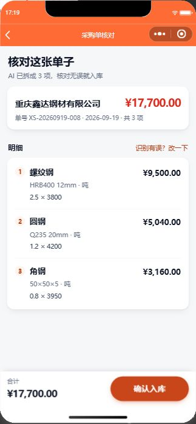

2026-09-19 · 易帮账本 · 全部数据来自线上服务器实测，不是估算
上一个问题「图片识别和语音转写没成功」的根因找到了：客户端 15 秒超时被掐断。
不是算法问题、不是接口问题、不是域名问题。代码里 wx.request 写死 timeout: 15000，
而识别这条链在服务端要串起「OCR/语音 + 大模型」，网关实测有明显尖峰（单个模型调用就出现过 18 秒）。
一旦超过 15 秒，客户端直接把连接断掉 —— 服务端却可能一切正常，所以日志里什么都看不出来。
你的手机在 17:18~17:19 拍了 3 次照：2 次成功（各 3 项明细）、1 次超时失败。 这就是「有时行有时不行」的真相。已经修好：AI 类接口超时改成 60 秒，同时把模型换成快的，把典型耗时压到 3 秒以内。
| 环节 | 耗时 | 判断 |
|---|---|---|
| 读文件 + 转 base64（音频 38K / 图片 555K） | 0 ~ 1ms | 完全不是瓶颈 |
语音转写 qwen3-asr-flash | 465ms | 已经很快，模型侧没什么可优化 |
图片取文 qwen3.5-ocr（555K 照片） | 3757ms | 偏慢，且随图片变大变慢 |
结构化 qwen-plus | 3946 ~ 6348ms | 最大的那块，占了图片链路一多半 |
结构化 qwen-flash | 1728 ~ 2064ms | 同样输入，准确率一样 |
结论很直白：语音慢不在语音，在它后面的「归类」；图片慢在「取文 + 结构化」串了两次模型。
用线上真实的归类提示词 + 7 个用例（含一句话多笔、昨天/前天换算、回款、应收、没提金额）逐个跑：
| 模型 | 正确率 | 中位耗时 | |
|---|---|---|---|
| qwen-plus（原来用的） | 7 / 7 | 1042ms | |
| qwen-flash ← 换成这个 | 7 / 7 | 513ms | 快 2 倍 |
| qwen-turbo | 6 / 7 | 526ms | 算错 2.5吨×3800=7600，淘汰 |
| 路径 | 耗时 | 准确率 |
|---|---|---|
老路：取文 + qwen-plus 结构化（两次模型） | 7784ms | 全对 |
慢路：取文 + qwen-flash 结构化 | 2974ms | 全对 |
快路：qwen-vl-ocr-latest 一次看图出结果 | 2506ms（最快 1928ms） | 3 轮 3/3 全对 |
qwen3-vl-flash 一次看图 | 3479ms | 3 轮 3/3 全对 |
qwen-vl-plus 一次看图 | 3680ms | 0/3，第 1 行必错，淘汰 |
图片识别整体快了约 3 倍；在真实手机拍的模糊照片上差距更大（实测 0.7~1.5 秒 vs 原来约 10 秒）。 而且快路拿不到明细时会自动退回老路兜底 ——「模型没认出来」和「这张单子本来就没明细」是两件事，不能混。
光靠随手拍的照片比不出结论 —— 那张图本身字迹有歧义时，每个模型给出的供应商名都不一样。所以我造了一张真值已知的标准送货单：

qwen-flash：语音链路的第二段快一倍，准确率不变。qwen-vl-ocr-latest），拿不到明细再退回原来两次串行的路。| 方案 | 效果 | 代价 |
|---|---|---|
| 微信同声传译插件 | 边说边出字，几乎零等待，还免费 | 要先去小程序后台添加这个插件；会换掉现在自研的语音转写 |
qwen3-asr-flash-realtime 流式 |
边说边出字 | 要改成 WebSocket 长连接，改造量明显更大 |
| 再压录音体积 | 几乎没用 | 录音已经只有 24~38KB，不是瓶颈，不建议动 |
语音转写本身只用 465 毫秒，快的空间在它后面的归类 —— 已经快了一倍。图片原来要串两次模型（约 8 秒），现在一次调用出结果（约 2.5 秒）。而真正让你看到「没成功」的，是那个 15 秒的客户端超时，已经修掉了。